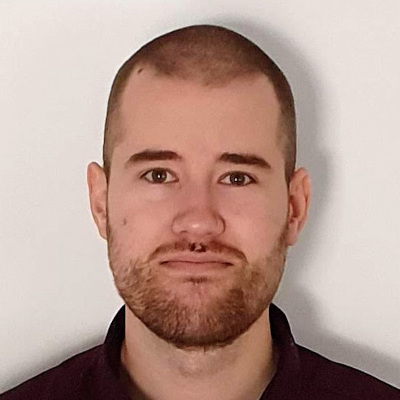

Daniel Lundén
PhD | Senior Member of Technical Staff at Oracle
 dlunde.github.io
dlunde.github.io
 daniel.lunden@gmail.com
daniel.lunden@gmail.com
 +46737835326
+46737835326
 dlunde
dlunde
 dlunde
dlunde

PhD | Senior Member of Technical Staff at Oracle
dlunde.github.io
daniel.lunden@gmail.com
+46737835326
dlunde
dlunde

I am a software developer and researcher with a particular interest in programming language theory, compilers, and static program analysis. I am currently a HotSpot JIT compiler engineer at Oracle.
I received my PhD degree in Information and Communication Technology in 2023 from KTH Royal Institute of Technology, Stockholm, Sweden.
Oracle | Stockholm
Senior Member of Technical Staff
September 2023 – Present
I am working as a software developer in the HotSpot JVM compiler
team.
KTH Royal Institute of Technology | Stockholm
Research Engineer
March 2023 – August 2023
Continuation of my work as a doctoral student.
KTH Royal Institute of Technology | Stockholm
Doctoral Student
July 2017 – March 2023
I researched topics in probabilistic programming, an interdisciplinary
field spanning computer science, probability theory, statistics, machine
learning, and artificial intelligence. I focused on developing
mathematical foundations and efficient compilers for probabilistic
programming languages.
KTH Royal Institute of Technology | Stockholm
Teaching Assistant
September 2014 – March 2017
I worked as a teaching assistant in multiple courses (see Teaching and Supervision).
SICS Swedish ICT | Stockholm
Researcher
June 2016 – February 2017
I worked with the Unison project: a code generator using a combined
constraint model of register allocation and instruction scheduling to
generate potentially optimal code. My task was to update the target
description of a processor to the most recent version within the
project.
My Academy | Stockholm
Study Coach
May 2013 – May 2016
I assisted high school students with mathematics and related topics
during the semesters.
Designingenjörerna | Stockholm
Software Developer
June 2015 – August 2015
I worked as a front-end Android and back-end PHP developer.
Designingenjörerna | Stockholm
Software Developer
June 2014 – August 2014
I worked with both front-end and back-end web development in JavaScript
and PHP.
KTH Royal Institute of Technology | Stockholm
Doctor of Philosophy (Teknologie doktor)
2017 – 2023
Doctoral thesis in Information and Communication Technology with
specialization in Software and Computer Systems (see Theses). My main supervisor was David Broman.
KTH Royal Institute of Technology | Stockholm
Master of Science, Master of Science in Engineering (Civilingenjör),
Bachelor of Science
2012 – 2017
Degree Programme in Computer Science and Engineering (Datateknik).
European Association for Programming Languages and Systems
(EAPLS)
ETAPS Best Paper
Award
2023
European Symposium on Programming (ESOP)
Distinguished Artifact
Award
2022
Oracle | Stockholm
Master’s thesis supervision, Tianxing Wu
Spring 2025
[ DiVA
| PDF ]
KTH Royal Institute of Technology | Stockholm
Course Responsible for IS1200 Computer Hardware Engineering
Spring 2021
I was in charge of the overall planning and execution of one course
round (approximately 200 students). I also gave two lectures.
Teacher in IS1200 Computer Hardware Engineering and IS1500 Computer
Organization and Components
August 2017 – Spring 2022
I was a core member of the teaching team, and my tasks included
exercises, seminars, labs, examination, and a few lectures.
Teaching Assistant in DD1361 Programming Paradigms, DD2395 Computer
Security, and DD1368 Database Technology
September 2014 – March 2017
I worked as a teaching assistant at lab sessions. The main task was to
help and examine students.
HSB Bostadsrättsförening Östra Polhem 4:2 |
Järfälla
Board Member (Styrelseledamot)
2020 – 2026
KTH Royal Institute of Technology | Stockholm
Doctoral Student Representative in the ICT Doctoral Program
Council
2018 – 2022
PROBPROG
Program Committee Member
2021
NeurIPS
Reviewer
2021
Daniel Lundén, Lars Hummelgren, Jan Kudlicka, Oscar Eriksson, and David Broman. Suspension Analysis and Selective Continuation-Passing Style for Higher-Order Probabilistic Programming Languages. ESOP 2024. [ Springer Link | PDF | arXiv (extended) | PDF (extended) ]
Daniel Lundén, Gizem Çaylak, Fredrik Ronquist, David Broman. Automatic Alignment in Higher-Order Probabilistic Programming Languages. ESOP 2023. EAPLS Best Paper Award. [ Springer Link | PDF | arXiv (extended) | PDF (extended) ]
Daniel Lundén, Joey Öhman, Jan Kudlicka, Viktor Senderov, Fredrik Ronquist, David Broman. Compiling Universal Probabilistic Programming Languages with Efficient Parallel Sequential Monte Carlo Inference. ESOP 2022. Distinguished Artifact Award. [ Springer Link | PDF | arXiv (extended) | PDF (extended) ]
Daniel Lundén, Johannes Borgström, and David Broman. Correctness of Sequential Monte Carlo Inference for Probabilistic Programming Languages. ESOP 2021. [ Springer Link | PDF | arXiv (extended) | PDF (extended) ]
Gizem Çaylak, Daniel Lundén, Viktor Senderov, and David Broman. Statically and Dynamically Delayed Sampling for Typed Probabilistic Programming Languages. SLE 2024. [ ACM | PDF ]
Fredrik Ronquist, Jan Kudlicka, Viktor Senderov, Johannes Borgström, Nicolas Lartillot, Daniel Lundén, Lawrence Murray, Thomas B. Schön, and David Broman. Universal probabilistic programming offers a powerful approach to statistical phylogenetics. In Communications Biology 4. 2021. [ Nature | bioRxiv | PDF ]
Lawrence M. Murray, Daniel Lundén, Jan Kudlicka, David Broman, and Thomas Schön. Delayed Sampling and Automatic Rao-Blackwellization of Probabilistic Programs. AISTATS 2018. [ AISTATS | PDF ]
Daniel Lundén. Correct and Efficient Monte Carlo Inference for Universal Probabilistic Programming Languages. Doctoral thesis, KTH Royal Institute of Technology. 2023. [ DiVA | PDF | Errata ]
Daniel Lundén. Delayed Sampling in the Probabilistic Programming Language Anglican. Master’s thesis, KTH Royal Institute of Technology. 2017. [ DiVA | PDF ]
Erik Forsblom, Daniel Lundén. Factoring Integers with Parallel SAT Solvers. Bachelor’s thesis, KTH Royal Institute of Technology. 2015. [ DiVA | PDF ]
Viktor Senderov, Jan Kudlicka, Daniel Lundén, Viktor Palmkvist, Mariana P. Braga, Emma Granqvist, David Broman, Fredrik Ronquist. TreePPL: A Universal Probabilistic Programming Language for Phylogenetics. 2023. [ bioRxiv | PDF ]
Daniel Lundén, Joey Öhman, David Broman. Compilation of Universal Probabilistic Programs to GPGPUs. PROBPROG 2020. [ PROBPROG | PDF | Poster ]
Daniel Lundén, David Broman, Fredrik Ronquist, and Lawrence M. Murray. Automatic Discovery of Static Structures in Probabilistic Programs. PROBPROG 2018. [ PROBPROG | PDF | Poster ]
Daniel Lundén, David Broman, and Lawrence M. Murray. Combining Static and Dynamic Optimizations Using Closed-Form Solutions. PPS 2018. [ PPS | PDF | Poster ]